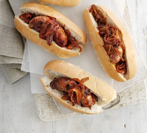

Sweet Chilli Dog

Deliciously Sweet Chilli Hotdog Recipe
This quick and easy hotdog can be all yours in a manner of minutes
Ingredients:
- 2 onions, red, white or one of each
- 4 tbsp sweet chilli sauce
- 2 tbsp tomato purée
- 4 hot dog buns
Steps:
- Step 1:
Heat oven to 220C/200C fan/gas 7. Spread the sausages in a roasting tin and cook for 20-25 mins, turning, until golden and cooked through.
- Step 2:
Meanwhile, fry the onions in a splash of oil over a high heat until almost softened and browning. Stir in the sweet chilli sauce and tomato purée with some seasoning, and cook for 1 min more.
- Step 3:
Split the hot dog buns, add a spoonful of the sweet chilli onions, top with a sausage, then a spoonful more onions.